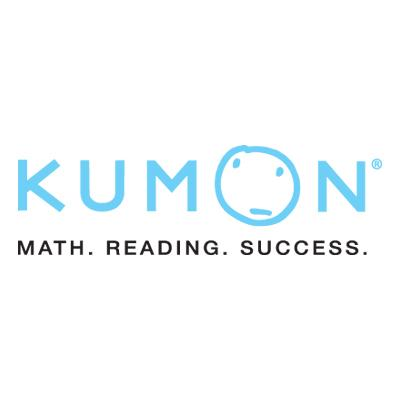
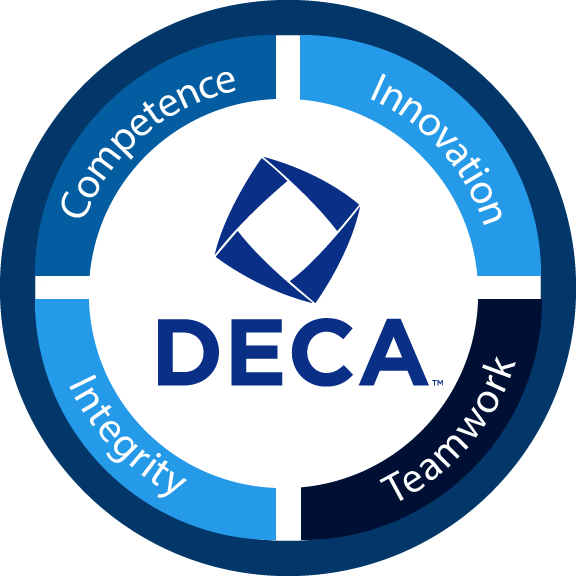
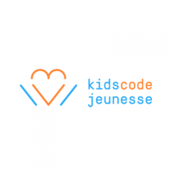
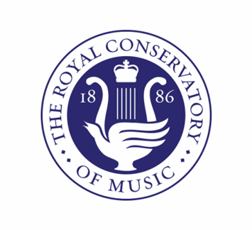
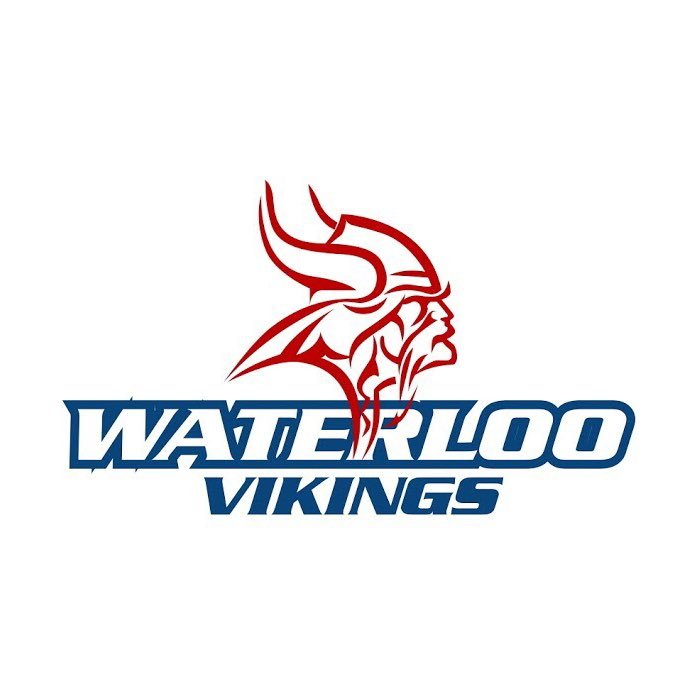

Kumon Math and Reading Tutor
During weeknights, I devote my time to tutoring math and reading comprehension/writing skills to students ranging from elementary to high school. During these times, I usually correct
their assigned homework and help the students with a topic that they are having trouble with. All in all, it is a fun experience and I learn a lot of skills
working at Kumon Waterloo North.
Junior Achievement | Eternal Essence
Junior Achievement is a large youth business program in Canada that educate high school students about financial literacy, work readiness and entrepreneurship with the help of educators
volunteers and local businesses. At my time there, I was the Vice President of Finance of a company called Eternal Essence. Our product was a candle case with a unique design which helped
to create a more fashionable and zen home-environment. As the VP of Finance, I was in charge of creating and organizing financial documents (balance sheets, income statements, etc.) and
a major shareholder of the company.

DECA Regional Finalist
DECA is a non-for-profit organization designed to educate high school and collegiate students about various business principles such as marketing, hospitality, management and entrepreneurship.
During my high school career, I was involved with DECA for two years. The most notable year was placing top 10 in the ETDM (entrepreneurship team decision making) Cluster at the regional DECA competition and participating at
the provincial level. Throughout the preperation for these events, I learned basic principles of business which included entrepreneurship, finance, and marketing.

Kids Code Jeunuesse Instructor
In the summertime, I helped in conducting 2 hour programming sessions to children (ages 8-11) in languages like scratch and python. In these sessions, we would learn the basic syntax and operations of a language and then
apply it to a project that I would provide them to finish. The children were successful building projects like snake, pong, and role-playing games.
2702 Rebels | FIRST Robotics Team Member
In my Grade 11 year, I joined the 2702 Kitchener-Waterloo Rebels Robotics Team which competed in the FIRST robotics competitions. In my time there, I took part in creating parts of the robot and learning more about
Computer-aided design (CAD). Also, I used my business skills to help with the social media and the FIRST entrepreneurship award. During the coronavirus break, I was an active member of creating a design challenge
for kids in their spare time. The livestream started on May 4th.

Piano | RCM Certification
Since the age of 8, I have been playing the piano. At first, I played to learn the fundamentals and play more modern music. Later, I worked for obtaining RCM certificates. Currently,
I have levels 1, 3, 5 and 7 piano certificates and levels 5 and 6 for certificates for theory. Also, I have taken part in a multitude of concerts in the Kitchener-Waterloo Region.

Waterloo FC Soccer Team
Throughout high school, I played a defensive role in the Waterloo Collegiate Institute's Soccer Team. As a team, we have achieved so much like being the WCSAA finalists and CWOSSA
participants.
Waterloo United House League | Certified Referee and Player
I have played houseleague soccer for the past 7 years. Throughout this time, I have gained many skills in soccer and apply it to my school's soccer team. I was a captain for my Grade 9 team
and my team and I have won multiple Waterloo Houseleague soccer tournaments. I took my love of soccer to the next level when I took a course learning refereeing. I have refereed many games for
Ontario and OPDL soccer games for ages 8-14.